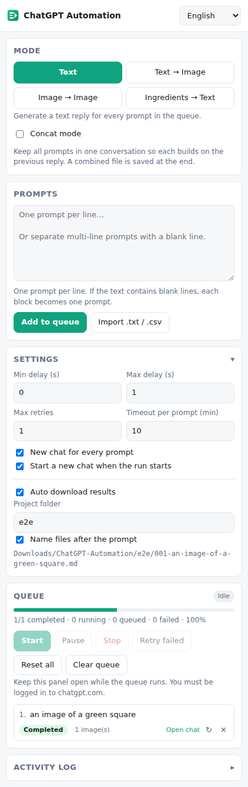

Queue hundreds of prompts, then let ChatGPT Automation submit them, wait for each reply, and auto-download the text and images. Everything is sorted into project folders. No clicks. No babysitting.
Install the extension See features
Queue dozens or hundreds of prompts. Each is submitted, waited on, saved, and the next one starts automatically.
Batch text replies saved as Markdown. Concat mode chains prompts in one conversation for longer connected content.
Generate many images in one run in 16:9, 9:16 or 1:1.
Batch transform images with prompts. Chain mode feeds each generated image into the next prompt.
Send reference images with prompts. Characters are added automatically when their file name appears in the prompt.
Per-prompt status (Queued → Running → Completed), retry counter, and progress, all in the Side Panel.
chrome://extensions and turn on Developer mode.manifest.json.